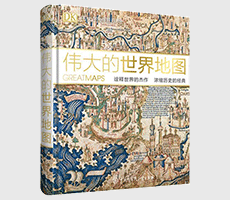

伟大的世界地图

| 作者: 英国DK公司 著 | 开本: 8开 |
| 出版社: 中国大百科全书出版社 | 纸张: 铜版纸 |
| 出版时间: 2017-03 | 页数: 252页 |
| 版次: 1 | 字数: 550千字 |
| ISBN: 9787500099802 | 定价: 138.00 |
| 分类: 地理 | 装帧: 精装 |
内容简介:
当今社会，人们主要将地图看作是定位或导航的工具。无论是纸质地图还是数字地图，它们的任务都是向我们提供附近环境信息或帮助我们快速、有效率地从一个地点到达另一个地点。然而，纵观历史，地图的作用却远不止于此。 地图所反映的不仅仅是地理地形：它们同时也是反映文化、信仰以及伟大的世界文明史的一个窗口。这本拥有精美插图的图书选取了60多幅世界上具影响力的地图，向读者提供了反映制图师们构思和描绘他们所处世界的独特视角。《伟大的世界地图》不仅描述了每幅地图的创作原因和创造过程，还通过对地图局部细节的深入分析展现了地图所在时期的历史文化背景以及它们背后的故事。
作者简介:
1974年建立DK公司。他们的愿景就是创作既有视觉冲击力又包含信息丰富的图书，使读者能够理解每一个主题。DK图书被认为是从出生到年老不断学习的生活指南。
Copyright © 2018-2020 徐悦佳. All rights reserved.